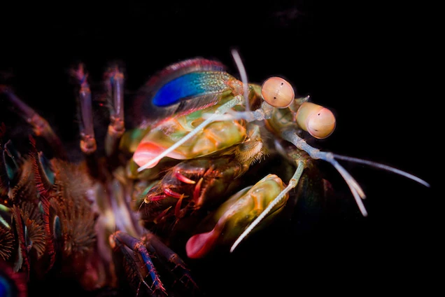

Fatos sobre o Stomatopoda
Descrição
Os estomatópodes (nome cientifico: Odontodactylus scyllarus) são predadores ativos que caçam presas com o auxílio de um sentido de visão muito apurado e capaz de interpretar polarização no espectro (ultravioleta e infravermelho). Apresentam uma grande variação de tamanho, que pode ir de poucos milímetros até aproximadamente 40 cm nas espécies maiores.
| Reino | Animalia |
| Filo | Arthropoda |
| Subfilo | Crustacea |
| Classe | Malacostraca |
| Subclasse | Hoplocarida |
Fatos Curiosos sobre o Stomatopoda
O camarão mantis possui uma super visão!
A mais emblemática delas, é o fato de que possui o mais complexo sistema de visão de cores do mundo animal, conseguindo processar 16 cores ao todo.

O animal mais forte do mundo!
O Camarão Mantis esmagador possui dois apêndices bem desenvolvidos (semelhantes a um martelo), chamados de Porretes de Dáctilo. Com essas “super patas” o animal espanca e esmaga suas presas em uma intensidade de aproximadamente kg/cm² (daí o motivo de um de seus nomes ser lagosta-boxeadora).

O animal mais rápido no gatilho
Além da enorme potência de seu soco, esse animal consegue movimentar seus apêndices tal qual um tiro de arma de fogo: seu golpe pode chegar a uma velocidade 720 km/h. Curiosamente, tanto a força quanto rapidez do ataque, não danificam sua estrutura corporal

Referencias
- https://www.nationalgeographic.com/science/article/natures-most-amazing-eyes-just-got-a-bit-weirder
- https://www.aquaa3.com.br/curiosidades-camarao-mantis/
- https://pt.wikipedia.org/wiki/Stomatopoda
- https://theoatmeal.com/comics/mantis_shrimp